가입, 요금제, 프로필 설정
발표자 Jason Graystone은 매매 프로그램을 여러 번 갈아탄 사람이에요. MetaTrader 4에서 시작해 eSignal, NinjaTrader(약 10년)를 거쳤어요. 쓰던 브로커가 TradingView와 연동되면서 이제 실제 계좌까지 TradingView로 옮겼다고 해요. 그래서 이 영상은 처음 쓰는 사람이 TradingView의 기능을 처음부터 끝까지 한 번씩 만져 보게 하는 강의예요. TradingView와 제휴 관계는 없다고 밝혀요.
요금제 고르기
가입은 tradingview.com에서 'Get started'를 누르면 돼요. 발표자가 먼저 강조하는 건 가격 대비 가치예요. 예전에 eSignal로 비슷한 시세 데이터를 받을 때는 한 달에 최대 300달러를 냈대요. 블랙프라이데이 무렵에는 큰 할인을 자주 하니, 그때까지 월 결제로 써 보다가 연 결제로 바꾸는 방법도 권해요.
화면의 요금표는 영국 파운드 기준이에요. Essential £12.95, Plus £24.95, Premium £49.95(월)이고, 연 결제를 고르면 16% 싸져요. 아래 줄을 보면 요금제마다 한 탭에 띄울 수 있는 차트 수(2·4·8개), 차트 하나에 올릴 수 있는 지표 수(5·10·25개), 가격 알림 수(20·100·400개)가 달라요.
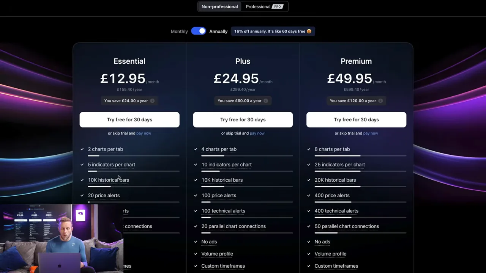
발표자는 매매를 본업처럼 할 생각이라면 좋은 요금제를 고르라고 해요. 돈을 낸 만큼 진지해지고, 사업 도구로 보면 비싼 지출이 아니라는 이유예요. 상위의 Professional 요금제는 탭 하나에 차트를 10~16개까지 띄울 수 있게 해 주지만, 처음에는 필요 없다고 해요.
홈 화면과 프로필
가입하면 홈 화면이 열려요. 실제 매매 화면은 위쪽 메뉴의 Products → Supercharts로 들어가요. 그 전에 오른쪽 위 프로필 메뉴에서 기본 설정을 해 두면 좋아요. 발표자는 Dark theme을 켜 둬요. 아침에 처음 열었을 때 눈이 부시지 않아서래요. Profile settings에서는 프로필 사진과 공개 정보를 바꿀 수 있어요.
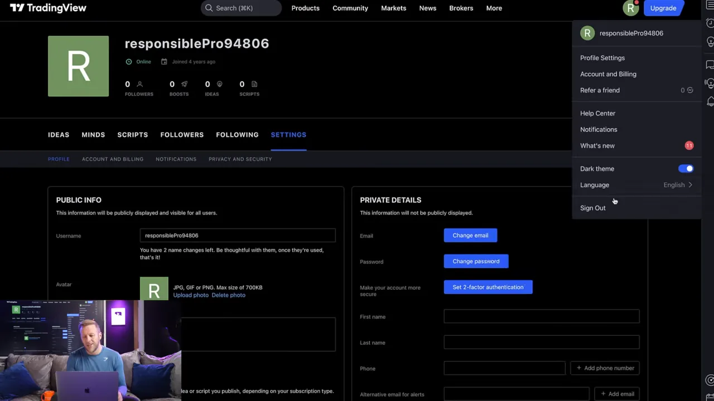
차트 화면 둘러보기와 꾸미기
Supercharts를 열면 차트 하나가 뜨고, 그 주변에 도구가 빙 둘러 있어요. 발표자는 처음 보는 사람이 길을 잃지 않게 화면을 구역별로 짚어 줘요. 아래 그림은 그 설명을 한 장으로 옮긴 거예요.
화면 구역 둘러보기
처음 열면 Apple 주가 차트가 떠 있고, 오른쪽 위 관심 종목 목록에는 TradingView가 넣어 둔 지수·주식·선물·외환·암호화폐 예시가 있어요. 발표자는 헷갈리니까 휴지통 아이콘으로 거의 다 지우고 처음부터 채우라고 해요.
차트는 마우스로 끌어서 사방으로 움직이고, 스크롤로 확대·축소해요. 오른쪽 가격 축을 위아래로 끌어도 확대돼요. 상단 바의 시간 프레임은 캔들스틱 하나가 얼마 동안인지를 정해요. 일봉이면 하나가 하루, 4시간봉이면 하나가 4시간이에요. 봉 모양은 캔들스틱, OHLC(Open, High, Low, Close) 막대, 속 빈 캔들 중에서 고르는데 취향 문제예요.
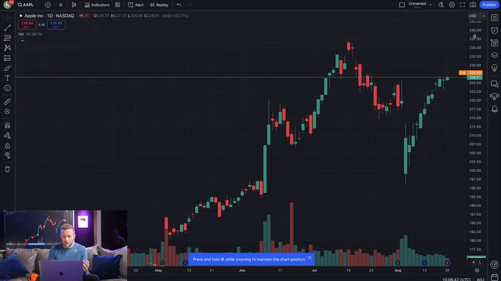
상단 바의 레이아웃 버튼은 한 화면을 여러 차트로 나눠요. 무료 요금제에서 누르면 아래처럼 '탭당 차트 1개가 한도'라는 안내가 뜨고 업그레이드를 권해요. 그래서 분할 화면은 요금제에 따라 쓸 수 있는 범위가 달라요.
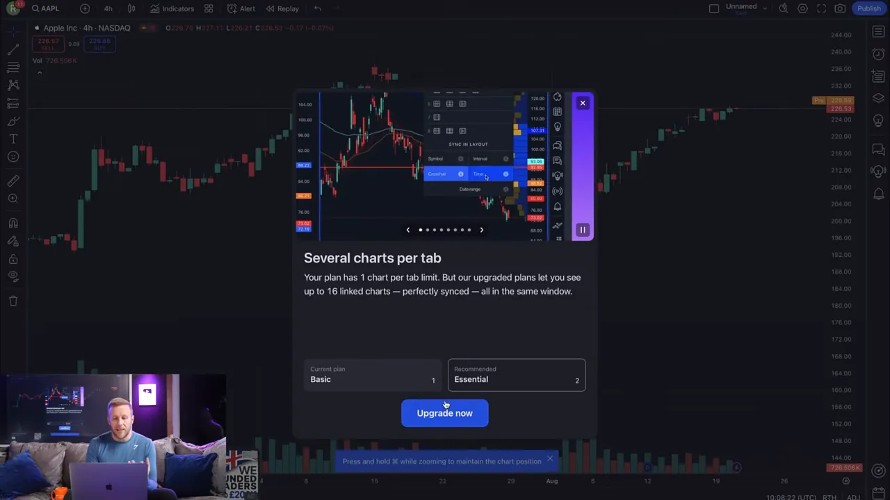
색과 배경 바꾸기
매일 들여다보는 화면이니 보기 편하게 꾸미는 게 다음 순서예요. 차트를 오른쪽 클릭해 Settings를 열면 Chart settings 창이 떠요. Symbol 탭에서 상승봉·하락봉의 몸통(Body), 테두리(Borders), 꼬리(Wick) 색을 따로 고를 수 있어요. 발표자는 팔레트에 아주 밝은 초록과 빨강을 추가해서, 가격이 눈에 확 들어오게 만들어요.
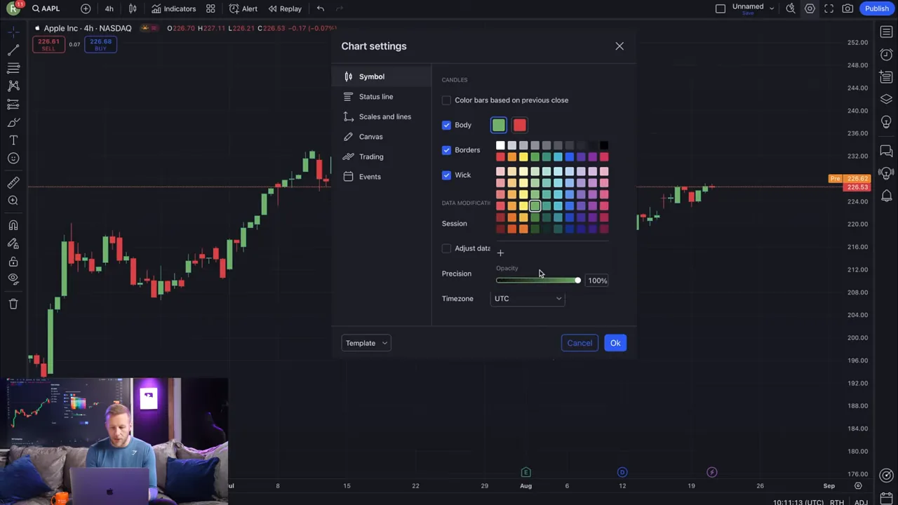
Canvas 탭은 배경이에요. 단색이나 그라데이션을 고를 수 있어요. 흰 배경으로 바꾸면 가격 글자와 축 선이 배경에 묻히니, Scales and lines 쪽에서 글자를 굵은 검정으로 바꿔요. 격자선(Grid lines)은 날짜마다 기준선을 그어 주는데, 발표자는 깔끔한 화면이 좋아서 꺼 둬요.
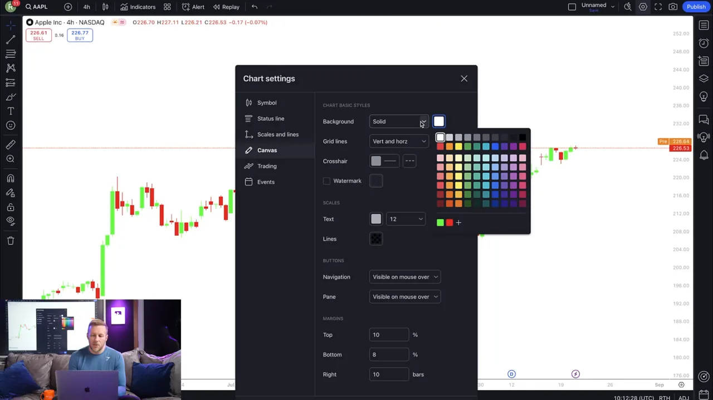
발표자가 꼭 켜는 건 Watermark예요. 차트 한가운데에 종목 이름과 시간 프레임을 흐리게 깔아 줘요. 여러 종목을 오가다 보면 지금 무엇을 보는지 잊기 쉬워서래요. 마지막으로 Events 탭에서는 실적 발표나 뉴스 같은 일정 표시를 켜고 끌 수 있어요. 다른 사람의 아이디어(Ideas) 표시는 항상 끄라고 권하는데, 이유는 마지막 절에서 나와요.
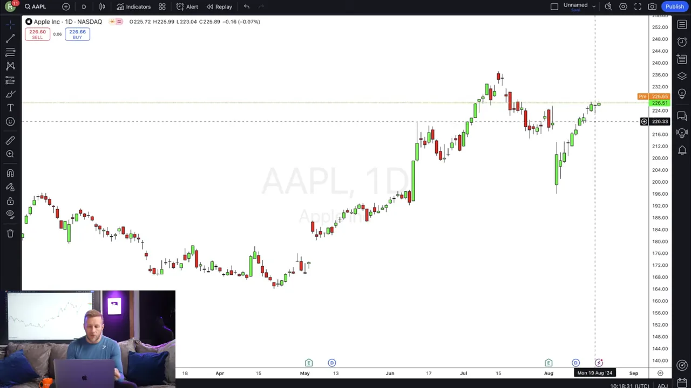
종목 추가와 계좌 연결
차트에 뜨는 시세는 처음에는 TradingView가 받아 오는 데이터예요. 브로커 계좌를 연결하면 그 브로커의 시세를 받고, TradingView 화면에서 바로 주문까지 넣을 수 있어요. 이 절은 종목을 추가하고, 계좌를 연결하고, 관심 종목을 정리하는 순서예요.
종목 추가하기
관심 종목 목록의 + 버튼을 누르면 Add symbol 창이 떠요. 'EURUSD'를 입력하면 같은 유로/달러인데도 오른쪽 출처가 줄마다 달라요. 같은 종목이라도 어느 회사의 시세를 받느냐에 따라 여러 줄로 나오는 거예요.
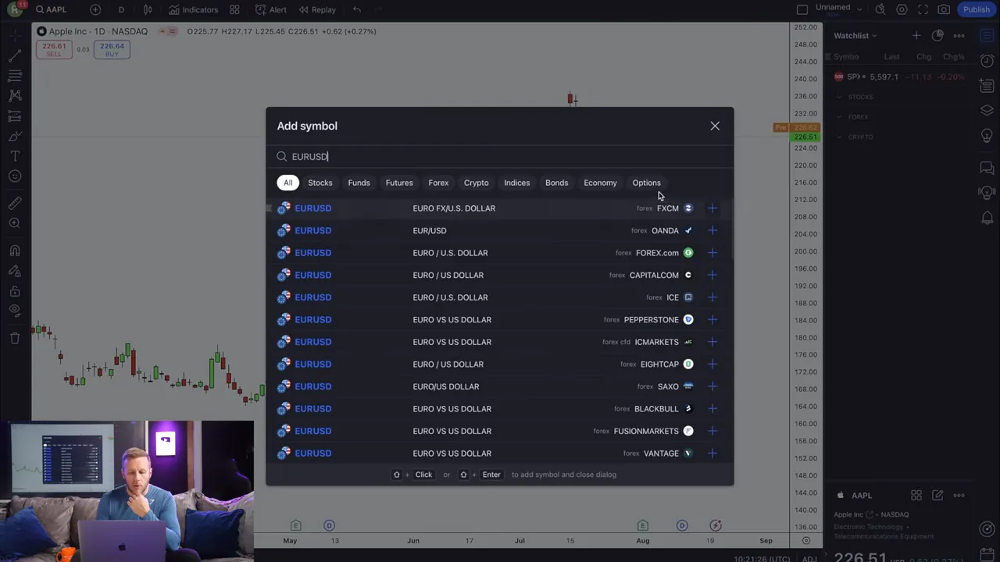
모의투자 계좌부터 연결하기
화면 아래 Trading panel을 열면 연결할 수 있는 브로커 목록이 나와요. 맨 앞에 Paper Trading이 있어요. 연결하면 TradingView가 가상의 돈 10만 달러를 주고, 진짜처럼 주문을 넣어 볼 수 있어요. 발표자는 매매가 처음이면 꼭 이것부터 하라고 해요. 포지션, 주문, 거래 내역이 모두 기록돼서 매매 일지처럼 쓸 수 있거든요.
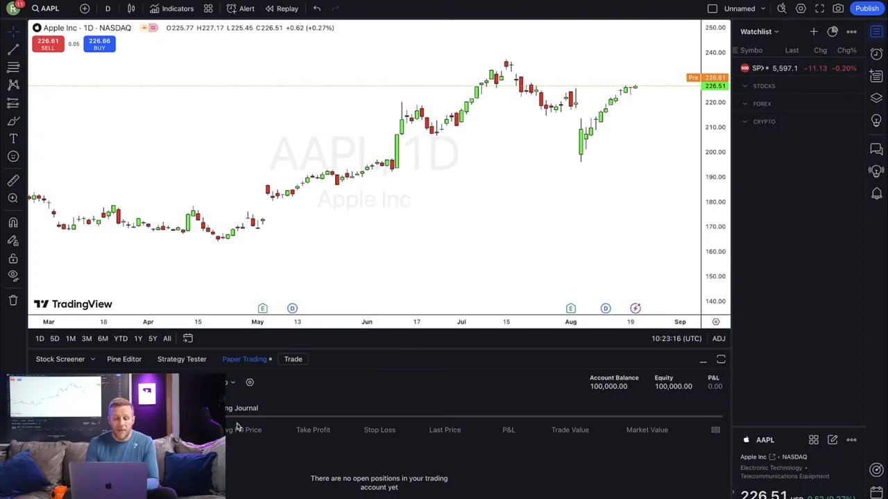
발표자는 이어서 자기가 쓰는 브로커 계좌를 연결해요. Connect를 누르고 브로커 로그인 정보를 넣으면 끝이에요. 브로커 계좌가 없으면 모의투자 계좌만 써도 이 강의를 따라오는 데 충분해요.
관심 종목 정리하기
계좌를 연결한 뒤 종목을 추가하면 그 브로커의 시세가 붙어요. 위쪽 탭으로 외환(Forex)만 걸러 보고 유로/달러, 파운드/달러, 달러/엔 같은 통화쌍을 하나씩 넣어요. TradingView가 종목 종류를 알아서 나눠 주지 않으니, 관심 종목 안에 Forex 같은 칸을 직접 만들어 넣어 두라고 해요.
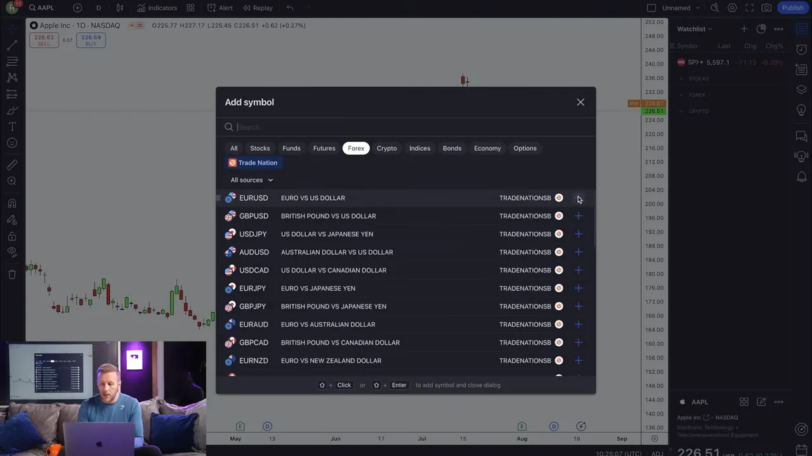
관심 종목에서 유로/달러를 누르면 차트가 바뀌고, 오른쪽에 주문 창(Create new order)이 열려요. 이제 바로 주문을 넣을 수 있는 상태예요. 다만 발표자는 아직 주문은 하지 말고 도구부터 익히자고 해요.
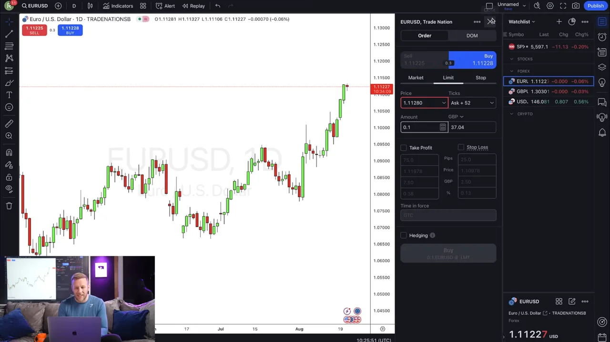
그리기 도구, 무엇을 쓸까요
차트 왼쪽 세로줄이 그리기 도구 모음이에요. 도구가 아주 많지만 발표자는 다 쓸 필요가 없다고 말해요. 누구나 쓰도록 만든 플랫폼이라 소셜 기능용 도구도 섞여 있고, 돈 버는 매매와는 상관없는 것도 많대요. 그래서 이 절은 발표자가 실제로 쓰는 도구를 중심으로 정리했어요.
십자선과 OHLC 값
맨 위 도구는 마우스 커서 모양이에요. 화살표, 점, 지우개도 있지만 발표자는 십자선(Crosshair)을 써요. 가로선과 세로선이 만나는 곳을 보면 '어느 날짜의 어느 가격'인지 한눈에 읽혀서예요. 십자선이 차트를 가리지 않도록 회색 점선으로 바꿔 둬요.
캔들스틱 위에 커서를 올리면 화면 왼쪽 위 숫자가 바뀌어요. 그 봉의 시가·고가·저가·종가(OHLC)예요. 진입 가격이나 손절 가격을 정확히 잡을 때 이 숫자를 봐요.
피보나치 되돌림과 확장
피보나치 도구는 종류가 많지만 발표자는 되돌림(Fib Retracement)과 확장(Trend-Based Fib Extension) 두 개만 써요. 추세가 이어질지, 어디까지 되돌아올지를 볼 때 근거를 하나 더 쌓는 용도래요. 단, 우위가 있는 전략과 함께 쓸 때 효과가 있다고 덧붙여요.
되돌림 도구는 스윙 고점에서 스윙 저점까지 끌면 돼요. 그러면 그 사이에 비율별 선이 그어져요. 설정 창에서 필요 없는 비율은 체크를 꺼서 지워요. 한 번 정리해 두면 다음에 그릴 때도 그대로 유지돼요.
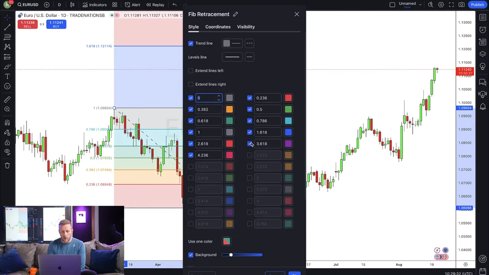
확장 도구는 점을 세 번 찍어요. 저점에서 고점, 그리고 되돌림이 끝난 지점까지요. 예시에서는 가격이 1.618 확장선에 닿고 거기서 멈췄어요. 발표자는 1.27과 1.618을 확장의 '황금 비율'로 보고, 롱 포지션이라면 1.618을 목표가로 잡는다고 해요.
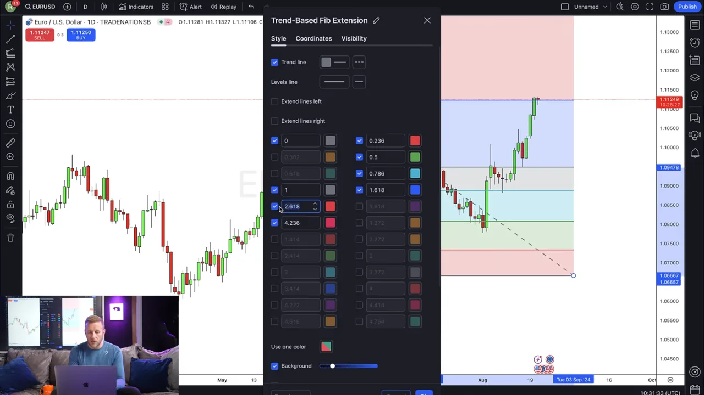
하모닉 패턴 도구
다음 묶음은 XABCD 패턴 도구예요. 가틀리, 배트, 크랩, 샤크, 버터플라이 같은 하모닉 패턴을 그릴 때 써요. 점 다섯 개(X, A, B, C, D)를 차례로 찍으면 다리 사이 비율이 표시돼요. 예시에서는 파운드/달러 차트에 버터플라이 모양을 그렸고, D 지점에서 가격이 꺾여 내려갔어요.
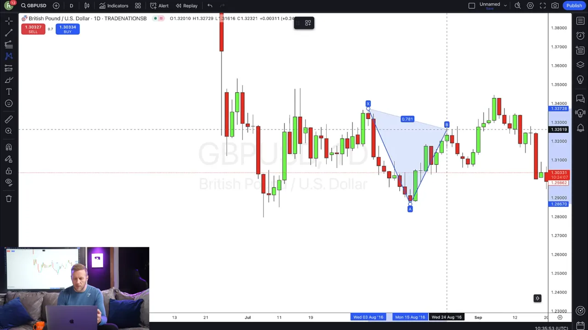
같은 묶음에 Cypher 패턴 전용 도구도 있어요. 발표자는 자기 회사 공동 창업자가 가틀리를 시험하다 이 패턴을 찾았고, 수요가 많아 TradingView가 전용 도구를 만들었다고 말해요. 이건 발표자의 주장이에요. 계산 방식이 XABCD와 조금 다르대요. 헤드앤숄더 도구도 있지만 발표자는 XABCD와 Cypher만 쓴다고 해요.
포지션 도구로 손익비 미리 보기
발표자가 '정말 대단한 도구'라고 부르는 건 Long Position·Short Position 도구예요. 진입 가격, 손절 가격, 목표 가격을 차트 위에 상자로 그리면 손익비, 손절까지의 핍 수, 움직임의 퍼센트가 바로 나와요. 진입점을 위아래로 옮겨 보면서 손익비가 1:1을 넘는 자리를 찾을 수 있어요.
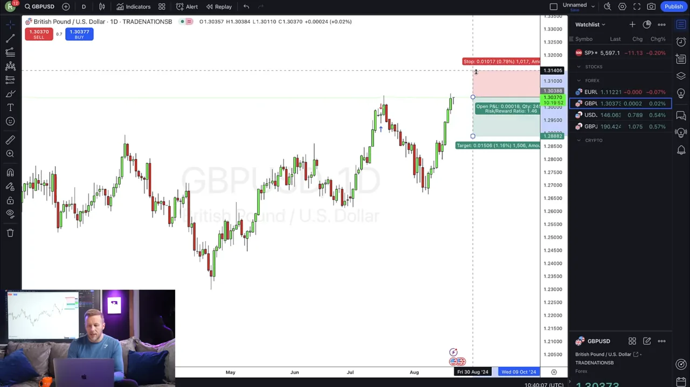
펜, 화살표, 사각형, 글자
그다음은 분석을 표시하는 도구예요. Brush는 이름과 달리 펜이고, Highlighter는 더 굵은 펜이에요. 발표자는 이런 표시를 지표나 가격에 쓰지 않는 색으로 그려요. 그래야 그림인지 가격인지 헷갈리지 않고 차트가 어수선해지지 않는대요.
가장 많이 쓰는 건 사각형이에요. 지지·저항 구간, 주요 가격대를 상자로 칠해 둬요. 테두리와 배경의 색, 투명도를 따로 바꿀 수 있어요. 화살표는 다음 움직임을 예상해 그릴 때 써요.
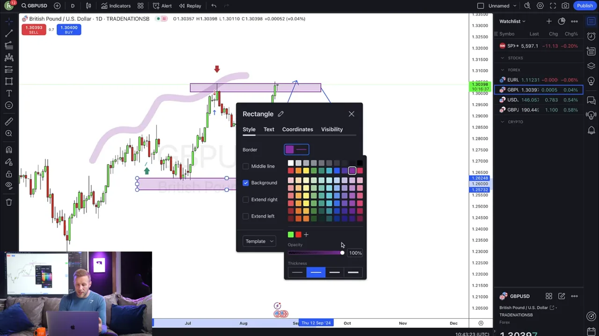
글자 도구로는 차트에 메모를 남겨요. Callout은 특정 캔들을 가리키는 말풍선이에요. 발표자는 매매가 처음이라면 이렇게 차트에 이야기를 적어 두고 스크린샷을 남기라고 해요. 무엇을 왜 노리는지 분명해지고, 판단이 주관에 덜 흔들린다는 이유예요.
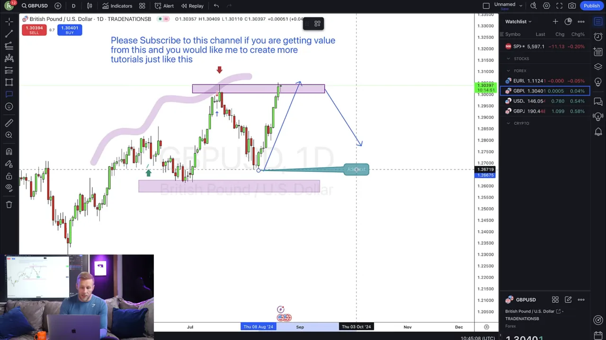
자, 확대, 자석, 연속 그리기
자(Ruler) 도구는 두 지점 사이를 재요. 끌어 놓으면 가격 변화, 퍼센트, 봉 개수, 날짜 수, 거래량이 한꺼번에 나와요. 손절 거리를 잴 때도 써요. 차트를 한 번 클릭하면 사라지는 일회용이라 화면에 남지 않아요.
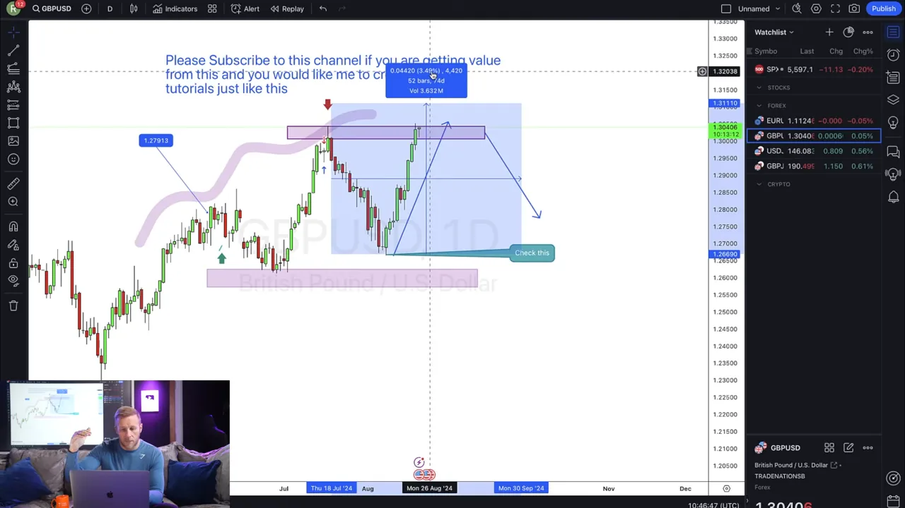
나머지 도구도 짧게 짚어요.
| 도구 | 하는 일 | 발표자 한마디 |
|---|---|---|
| Zoom In / Zoom Out | 원하는 구간으로 바로 확대하고, 다시 원래 보던 범위로 돌아가요 | 스크롤로 늘였다 줄였다 하는 버릇 대신 쓰라고 권해요 |
| Magnet | 도구를 그릴 때 커서가 가까운 봉의 고가·저가에 착 붙어요 | 피보나치나 XABCD를 정확히 찍을 때 특히 편하대요 |
| Stay in drawing mode | 한 번 고른 도구가 계속 선택된 채로 남아요 | 선이나 사각형을 여러 개 연달아 그릴 때 써요 |
| Lock all drawings | 그린 것을 모두 잠가 실수로 움직이지 않게 해요 | — |
| Hide all drawings | 그린 것을 잠깐 모두 숨겼다가 다시 보여 줘요 | 차트가 복잡해졌을 때 원래 가격만 보고 싶을 때 |
| Remove | 그림만, 지표만, 또는 전부 지워요 | — |
지표 추가와 바 리플레이
지표 추가하고 다듬기
상단 바의 Indicators를 누르고 RSI(Relative Strength Index)를 고르면 차트 아래에 RSI 창이 붙어요. 발표자는 RSI를 과매수·과매도를 거르는 용도로 써요. 가격에 집중하려고 RSI 창은 작게 줄여 둔대요.
RSI 선을 두 번 클릭하면 설정 창이 열려요. 발표자는 선을 검정으로 굵게 바꾸고, 위쪽 기준선은 초록(과매수), 아래쪽은 빨강(과매도)으로 칠해요. 기준값도 보통 쓰는 70과 30 대신 80과 20으로 바꿔요. 극단적인 상황만 거르려는 거예요. 가운데 기준선은 쓰지 않아서 지워요.
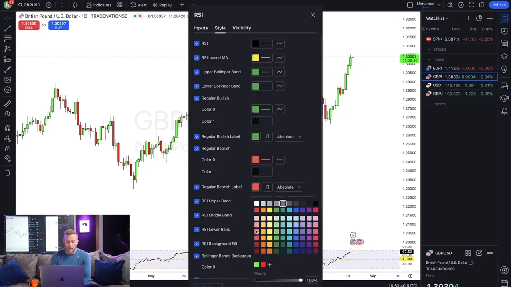
지표를 더 넣으면 아래로 차곡차곡 쌓여요. MACD(Moving Average Convergence Divergence)를 검색해 추가하면 RSI 아래에 붙어요. 발표자는 MACD는 기본값 그대로 써요. 지표 창마다 위아래로 옮기기, 접기, 크게 펼치기, 휴지통으로 지우기 버튼이 있어요.
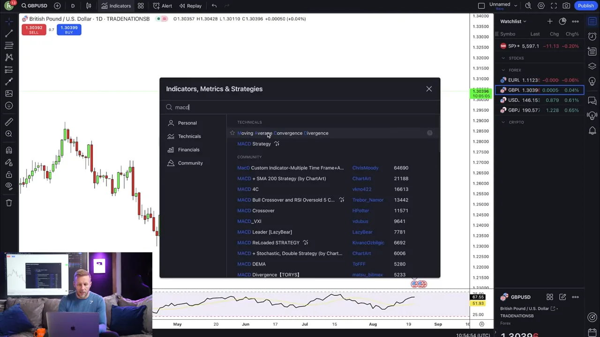
여기까지가 기본기예요. 발표자는 이 지점에서 영상을 멈추고 직접 해 보라고 해요. 계좌 연결(모의투자든 실제 브로커든), 화면 색 바꾸기, 관심 종목 만들기, 도구와 지표 만져 보기까지요.
바 리플레이로 과거를 다시 재생하기
바 리플레이는 과거의 한 시점을 고르면 그 뒤의 캔들을 모두 가려 주는 기능이에요. 그다음부터 캔들을 한 개씩, 또는 원하는 속도로 다시 보여 줘요. 결과를 모르는 상태에서 실제 장처럼 연습할 수 있어서, 전략을 백테스트할 때 아주 쓸모 있어요. 발표자는 이 기능이 무료 체험 계정에서는 안 된다고 말하고, 자기 유료 계정으로 바꿔서 보여 줘요.
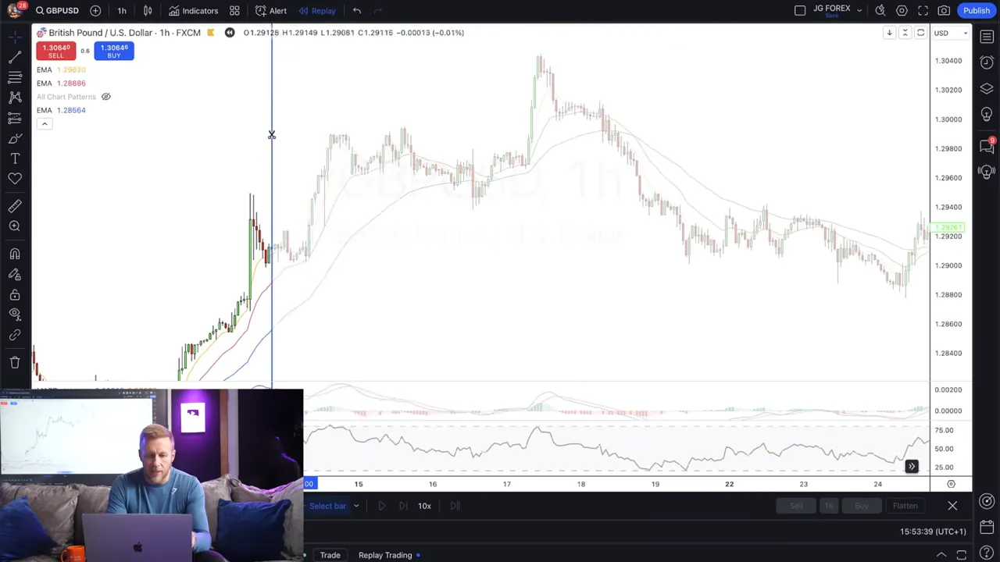
발표자는 즉석에서 간단한 규칙을 만들어 리플레이로 시험해요. 설명을 위한 예시일 뿐 실제로 권하는 전략은 아니에요.
캔들을 한 개씩 넘기다가 RSI가 80을 넘자 다음 봉에서 매도로 들어가요. 손절은 그 봉의 고점 위 3핍에 두고, 1.5:1 목표를 잡아요. 계속 넘기니 가격이 목표에 닿고 거래가 끝나요. 이 결과를 적어 두고 다른 시점에서 또 반복하는 거예요.
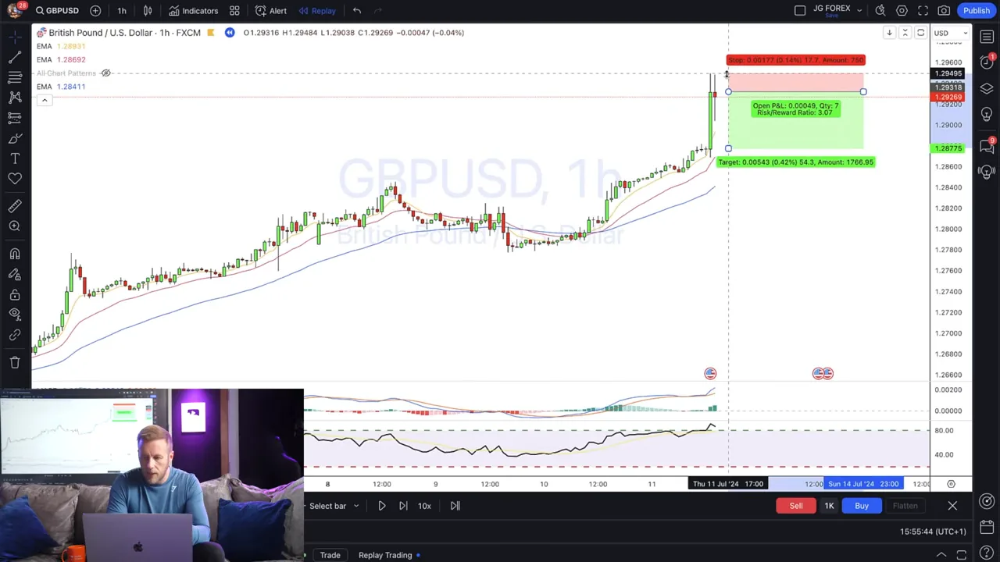
시작점은 봉이나 날짜로 고를 수 있고, Random bar를 누르면 아무 과거 시점으로 데려가요. 예시에서는 2005년 5월로 갔어요. 리플레이 중에도 Buy·Sell 버튼으로 가상 매매를 할 수 있어요. 얼마를 벌고 잃었는지까지 나오니 실제 매매처럼 느껴져요. 발표자는 이게 감정을 무디게 하고, 실전에서 어떤 기분일지 현실적인 기대를 갖게 해 준다고 해요. Flatten을 누르면 포지션을 모두 정리해요.
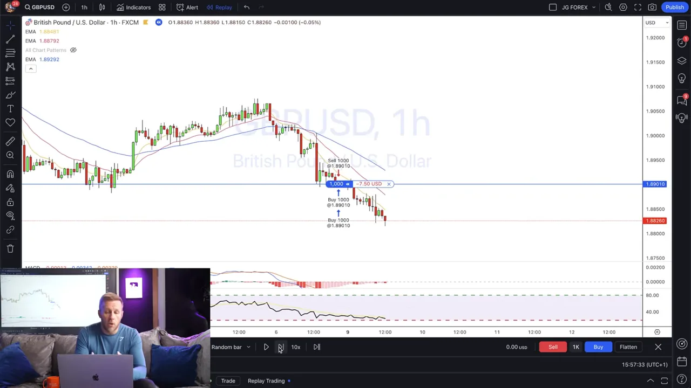
분할 화면으로 탑다운 분석
유료 계정에서는 한 화면을 여러 차트로 나눌 수 있어요. 발표자가 즐겨 쓰는 배치는 같은 종목을 시간 프레임 세 개로 동시에 보는 거예요. 탑다운 분석을 할 때 시간 프레임을 이리저리 바꿀 필요가 없어져요.
레이아웃 메뉴 아래쪽 'Sync in layout'에서 세 차트가 무엇을 공유할지 정해요. 발표자의 설정은 이래요.
| 동기화 항목 | 켜면 | 발표자 설정 |
|---|---|---|
| Symbol | 세 차트가 늘 같은 종목을 보여 줘요 | 켬 |
| Interval | 세 차트의 시간 프레임이 같아져요 | 끔 (시간 프레임을 다르게 보려는 배치라서) |
| Crosshair | 한 차트에서 커서를 움직이면 다른 차트에도 같은 시점이 표시돼요 | 켬 (가장 아끼는 기능) |
| Time | 새로고침하면 세 차트가 같은 시점으로 맞춰져요 | 켬 (안 켜면 가격 위치를 찾아 헤매게 된대요) |
| Date range | 보이는 날짜 범위를 맞춰요 | 켤 수 있다고만 언급 |
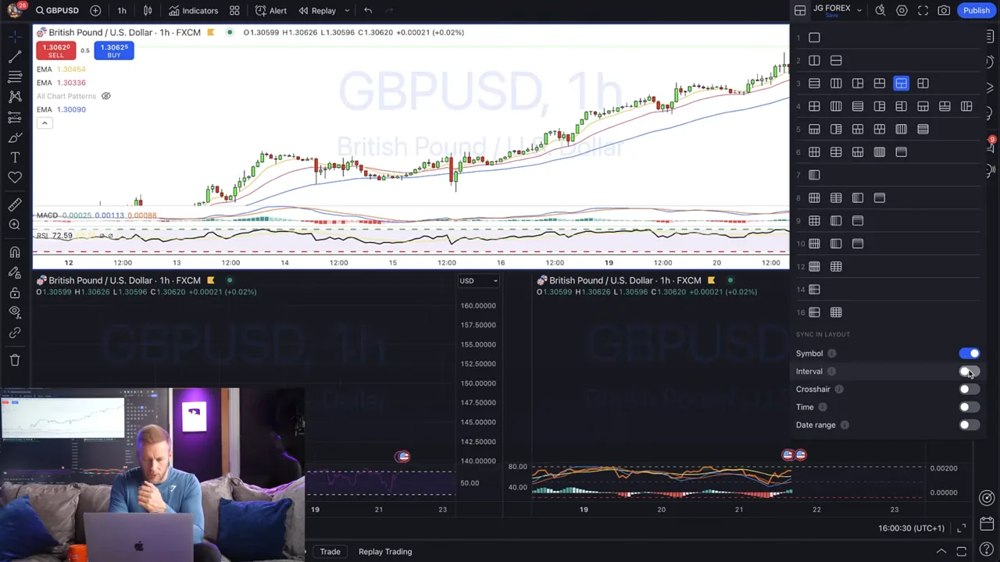
Crosshair 동기화를 켜면 일봉에서 커서를 올린 지점이 4시간봉과 1시간봉에서 어디인지 바로 보여요. 진입 기법을 쓸 때 큰 구조와 작은 구조를 같이 확인할 수 있어서 좋대요. 예를 들어 특정 고점 위에서 봉이 마감했는지를 세 차트에서 동시에 볼 수 있어요.
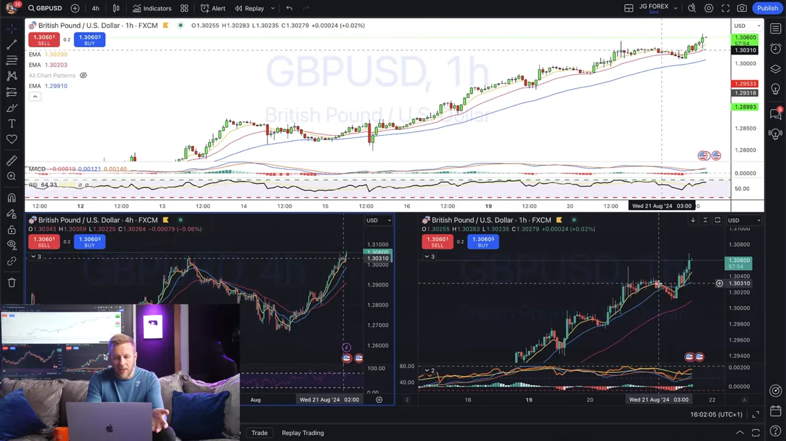
최상위 요금제는 한 탭에 차트 16개까지 띄울 수 있어요. 발표자는 지나치다고 보고 절대 안 쓸 거라고 해요. 모니터가 여러 대라면 TradingView를 탭 여러 개로 열고 탭마다 차트 네 개씩 띄우는 방법도 있대요.
주문 넣기: 시장가, 알림, 지정가
이제 주문이에요. 브로커마다 화면과 용어가 조금씩 다를 수 있지만 큰 틀은 같다고 해요. 발표자는 누구나 따라 할 수 있게 모의투자 계좌로 보여 줘요. 주문 종류 자체의 개념은 이 영상에서 다루지 않고, TradingView에서 어떻게 넣는지만 보여 줘요.
시장가로 바로 사고팔기
가장 빠른 방법은 차트 왼쪽 위의 빨간 'SELL', 파란 'BUY' 버튼이에요. 지금 가격에 바로 사거나 팔아요. 두 버튼 사이 작은 숫자는 매수가와 매도가의 차이(스프레드)예요. 차트를 오른쪽 클릭해 Trade → Create new order로 주문 창을 열 수도 있어요. Trading settings에서는 이 버튼을 보일지, 클릭 한 번에 바로 체결할지, 체결 소리를 낼지 같은 것을 정해요.
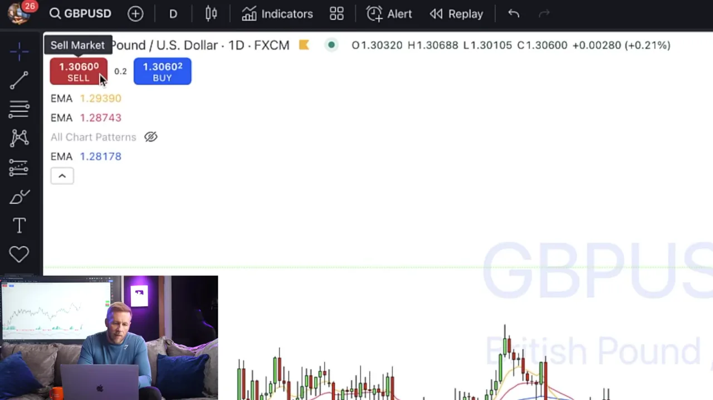
주문 대신 알림 걸기
가격이 조금 더 올라야 팔고 싶은데 차트 앞에 계속 앉아 있기 싫을 때가 있어요. 그럴 때 쓰는 게 알림(Alert)이에요. 주문이 아니라 '여기 오면 알려 줘'예요. 발표자의 예시는 이래요. 가격이 1.3108을 넘으면 바로 팔지 않고, 차트로 돌아와 매도 신호가 나왔는지 다시 확인하겠다는 거예요.
알림 창의 Condition에서 '가로지를 때(Crossing)', '위로 넘을 때', '아래로 내려갈 때' 같은 조건을 고르고, 한 번만 울릴지 매번 울릴지를 정해요. 이름과 메시지 칸에는 메모를 적을 수 있어요. 발표자는 '매도 준비, 핀바 확인' 같은 할 일을 적어 둬요.
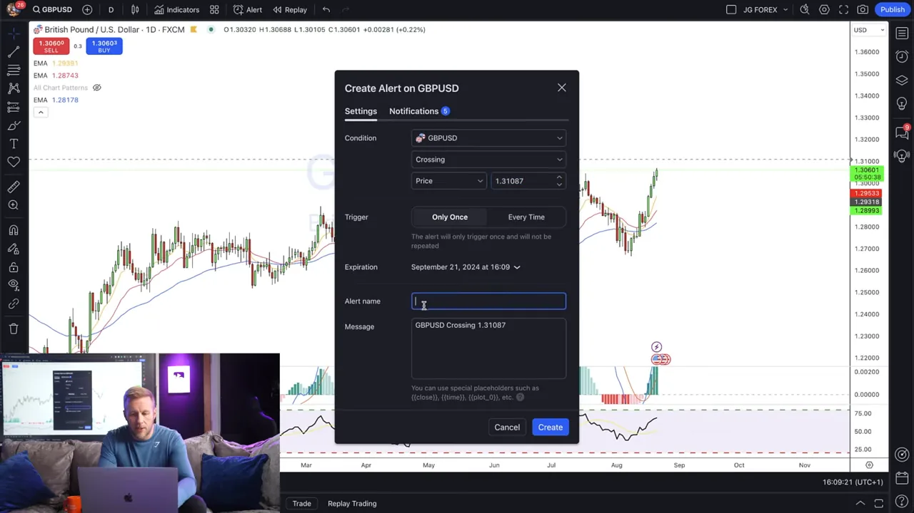
Notifications 탭에서는 어떻게 알릴지 골라요. 앱 푸시, 화면 팝업, 이메일, 소리, 문자 메시지까지 돼요. 발표자는 소리를 'Hand Bell'로 정해 둬서, 그 소리가 곧 '차트 보러 가라'는 신호래요. 알림은 차트에 그려 둔 가로선에도 걸 수 있어요.
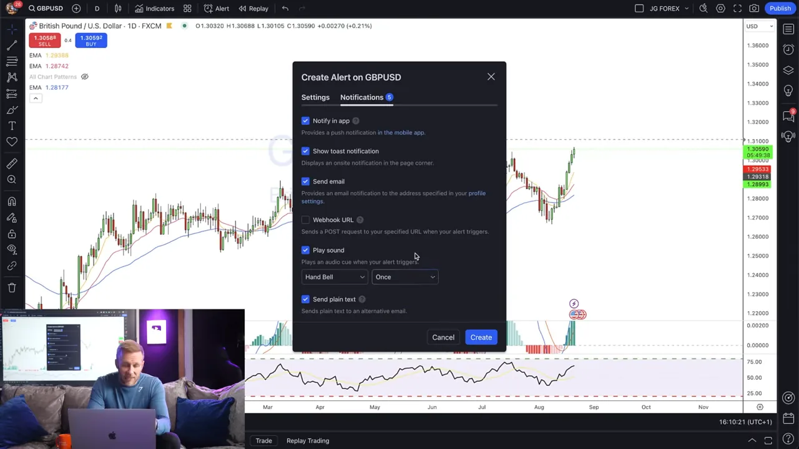
지정가 주문과 손절·익절
알림 대신 그 가격에 오면 그냥 팔고 싶다면 지정가 주문을 넣어요. 주문 창에서 Sell을 고르고 Market 대신 Limit 탭을 눌러요. 지금보다 높은 가격에 팔겠다는 지시예요. 예시에서는 1.3118에 미니랏 2개(20,000 단위)를 걸었어요.
주문이 걸리면 반드시 손절을 넣으라고 해요. 차트 위 주문 선을 누르거나 주문 창에서 Stop Loss를 체크하고 가격을 넣은 뒤 Modify order를 누르면 돼요. 예시의 손절은 1.3209예요. 익절(Take Profit)도 같은 방법으로 체크하고 가격을 넣어요.
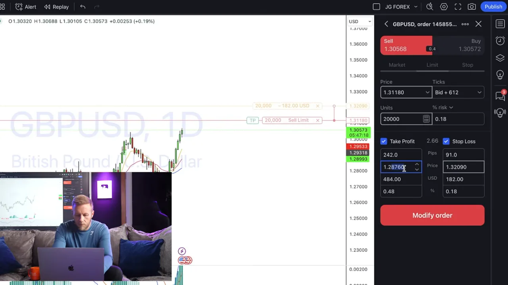
이렇게 넣은 손절과 익절은 원래 매도 지정가 주문에 연결돼 있어요. 매도 주문이 체결되기 전에는 둘 다 움직이지 않아요. 체결되는 순간 손절과 익절이 활성화돼요. 차트 위의 주문 선은 마우스로 끌어서 가격을 옮길 수도 있어요.
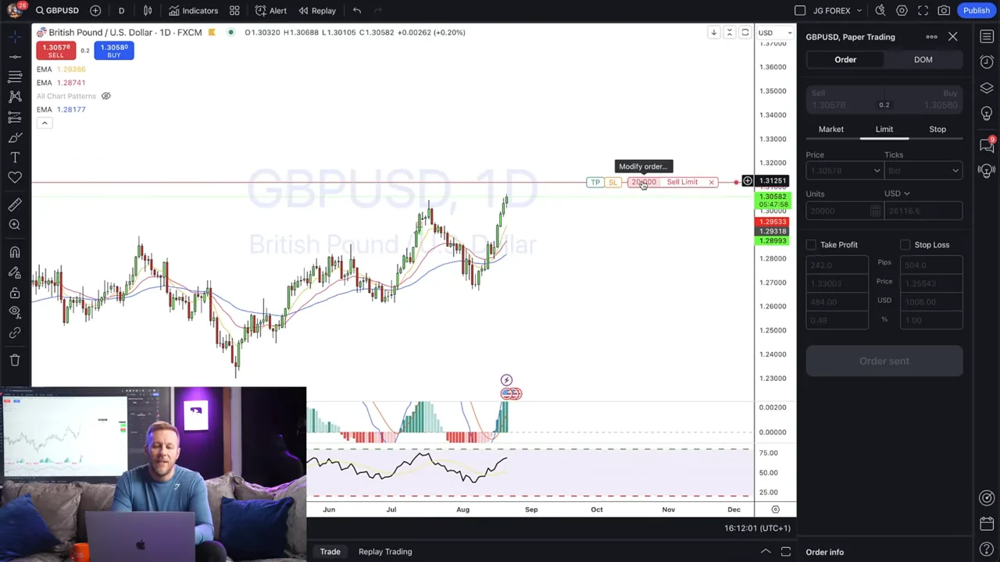
분할 청산, DOM, 전략 기능
목표를 여러 개로 나눠 청산하기
발표자가 자주 받는 질문은 '목표가를 여러 개 두려면 어떻게 하나요'예요. 방법은 익절을 원래 주문에 묶지 않고, 따로 반대 방향 지정가 주문을 여러 개 넣는 거예요. 같은 계좌 안이라서 합치면 하나의 포지션처럼 처리돼요.
예시는 이래요. 1.3118에서 미니랏 2개를 팔기로 했으니, 청산도 미니랏 1개씩 두 번 나눠요. 아래쪽 두 가격에 매수 지정가 주문을 1개씩 걸어요. 첫 번째가 체결되면 포지션이 절반으로 줄고, 손절 수량도 자동으로 절반이 돼요.
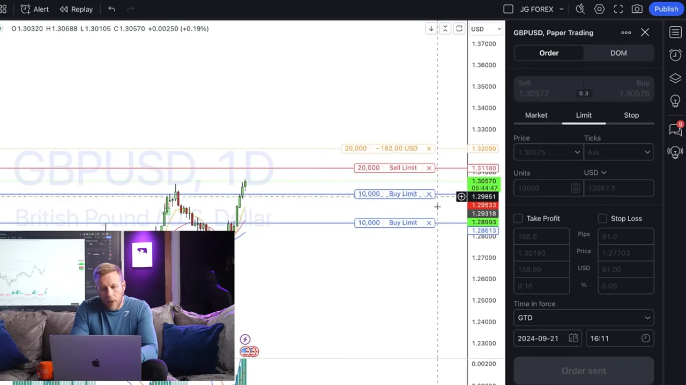
여기서 발표자가 경고하는 함정이 있어요. 앞에서 손절·익절을 묶어 넣었을 때는 진입이 체결돼야만 나머지 주문이 살아났어요. 그런데 이렇게 따로 넣은 매수 지정가는 독립된 주문이에요. 진입이 체결되기 전에 가격이 먼저 내려오면, 이 매수 주문이 그대로 체결돼서 원치 않는 매수 포지션이 생겨요. 그래서 발표자는 진입 주문과 손절만 먼저 넣고, 진입이 체결된 뒤에 분할 청산 주문을 넣으라고 해요. 청산 주문은 두 개가 아니라 서너 개로 나눠도 되고, 합계만 진입 수량과 같으면 돼요.
DOM: 호가를 보며 매매하기
주문 창의 DOM(Depth of Market) 탭은 가격대별 주문 상황을 세로 목록으로 보여 줘요. 아래에 수량과 Buy Mkt, Sell Mkt 버튼이 있어서, 가격이 움직이는 모습을 보며 바로 사고팔 수 있어요. 일부 트레이더는 이것만 보고 매매해요. 발표자는 이건 고급 매매라며 초보에게는 권하지 않아요. 여러 종목을 보면서 DOM으로 매매하면 정신이 없어진다는 이유예요.
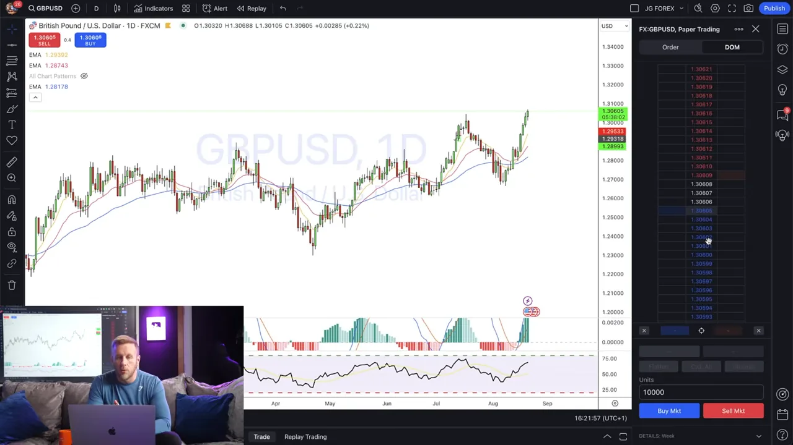
주문 유효기간과 위험 계산
지정가나 역지정가 주문은 나중에 체결될 수 있는 주문이라서 언제까지 살려 둘지 정할 수 있어요. 이게 Time in force예요. 모의투자 화면에서는 GTD(Good Till Date)를 고르고 날짜와 시각을 넣으면, 그때까지 체결되지 않은 주문은 자동으로 취소돼요. 발표자 자신은 이 기능을 쓰지 않는대요.
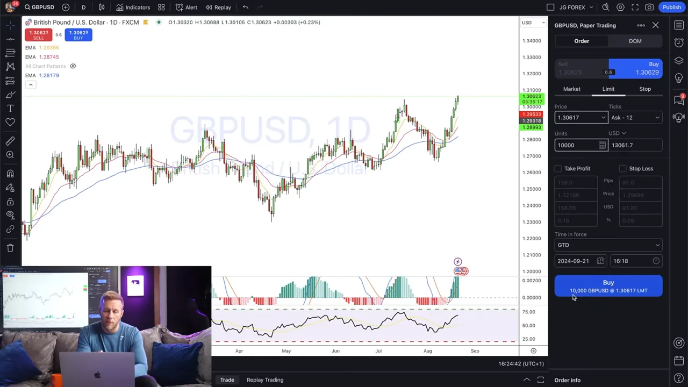
브로커에 따라 GTC(취소할 때까지 유지)나 OCO(하나가 체결되면 나머지를 취소) 같은 옵션도 있어요. OCO는 연결되지 않은 주문을 여러 개 걸어 둔 상태에서 손절이 먼저 나갔을 때 유용해요. 자리를 비운 사이 남은 목표 주문이 체결돼 반대 포지션이 생기는 걸 막아 주거든요. 다만 같은 이름이라도 브로커마다 뜻이 조금씩 다르니, 쓰는 브로커에 꼭 확인하라고 해요.
주문 창에는 수량 계산기도 있어요. 위험을 금액, 잔고 대비 비율, 위험 비율 중 하나로 정하면 수량을 계산해 줘요. 위험 비율로 고르면 손절 가격을 먼저 넣어야 수량이 나와요. 예전에 있던 추적 손절 기능은 사라진 것 같다고 발표자는 말해요.
남이 만든 전략과 Pine Script
Indicators 창의 Strategies 탭에는 이미 만들어진 매매 전략이 잔뜩 있어요. 하나를 고르면 차트에 매수·매도 지점이 찍히고, 아래 Strategy Tester에 순이익, 거래 수, 승률, 최대 낙폭 같은 성과가 나와요.
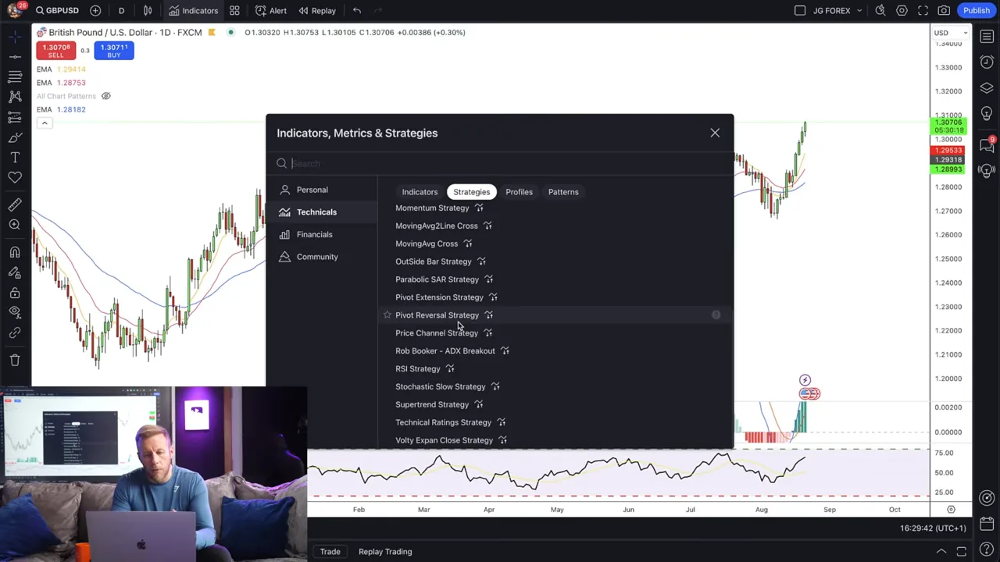
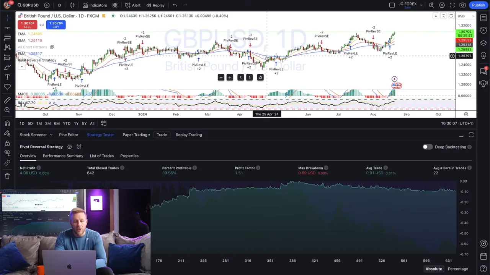
발표자는 이 기능에 비판적이에요. 남이 만든 전략을 따라 하는 건 시그널 서비스와 다를 게 없다고 봐요. 수익을 내려면 전략을 직접 만들고, 시험하고, 데이터와 씨름해 봐야 그 전략을 믿고 버틸 심리적 힘이 생긴다는 거예요.
if you want to be a professional Trader it's time to start being a system developer
프로 트레이더가 되고 싶다면, 이제 시스템을 직접 만드는 사람이 되어야 해요.
— 영상 1:05:34
Pine Script를 알면 전략을 직접 짜서 시험하고, TradingView에 올려 공유할 수도 있어요. 발표자는 이건 초보 범위를 넘는다며 소개만 하고 넘어가요.
기록, 공유, 리서치 도구
스크린샷으로 매매 기록 남기기
상단 바 오른쪽 카메라 버튼을 누르면 지금 차트를 사진으로 찍어요. 이미지를 내려받거나, 복사하거나, 링크를 복사하거나, X(옛 트위터)에 바로 올릴 수 있어요. 발표자는 링크를 백테스트 일지나 매매 일지에 붙여 둬요. 나중에 전략을 다듬을 때 그때 상황을 다시 보려는 거예요.
아이디어 공개하기
TradingView에는 소셜 기능이 통째로 들어 있어요. 발표자는 다른 사람들의 아이디어가 올라오는 게시판은 쓰지 말라고 해요. 누구나 의견을 내다 보니 휩쓸리기 쉽고(FOMO(Fear Of Missing Out)), 분위기가 험해질 수 있다는 이유예요. 특히 초보는 거기서 길을 잃기 쉽대요. 앞에서 차트 설정의 Ideas 표시를 끄라고 한 것도 같은 이유예요.
대신 자기 분석을 공개하는 건 권해요. 스스로를 책임지게 만드는 장치라서요. 차트에 분석을 그린 뒤 Publish를 누르면 제목과 설명을 적는 창이 떠요. 영상으로 설명을 녹화해서 올릴 수도 있어요.
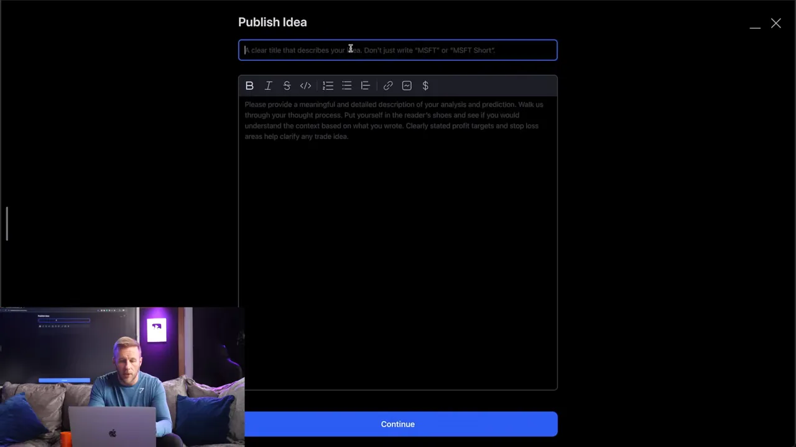
다음 화면에서 공개 범위(Public·Private), 종류(Analysis·Tutorial), 방향(Long·Neutral·Short), 검색용 카테고리를 골라요. 마지막 줄의 '하우스 룰을 지키겠다'에 동의해야 올라가요. 발표자는 외부 링크나 유튜브 링크를 올리거나, 남에게 사라·팔라고 권하면 경고를 받고 계정을 잃을 수도 있다고 주의를 줘요.
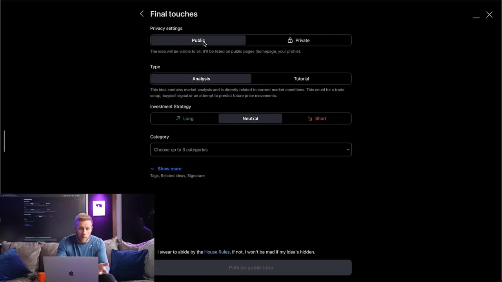
화면 오른쪽 세로 메뉴에는 내가 올린 아이디어, 걸어 둔 알림, 메시지가 모여 있어요. 알림 목록에서는 어떤 알림이 살아 있고(Active) 어떤 알림이 이미 울렸는지(Triggered) 한눈에 볼 수 있어요.
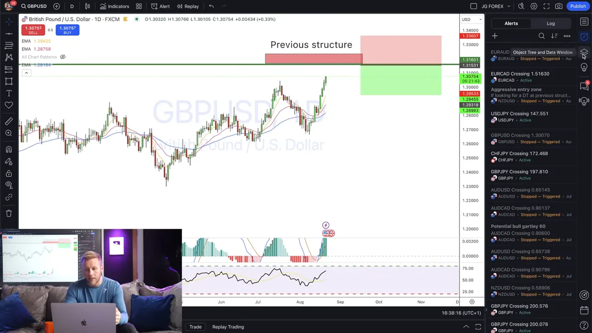
경제 지표 캘린더
오른쪽 메뉴 아래쪽의 캘린더는 경제 지표 발표 일정을 보여 줘요. 발표값(Actual), 예상값(Forecast), 이전값(Prior)이 나란히 나오고, 항목을 펼치면 그 지표가 무엇이고 왜 중요한지 설명이 나와요. 발표자는 Forex Factory 캘린더를 따로 열 필요가 없어서 편하다고 해요.
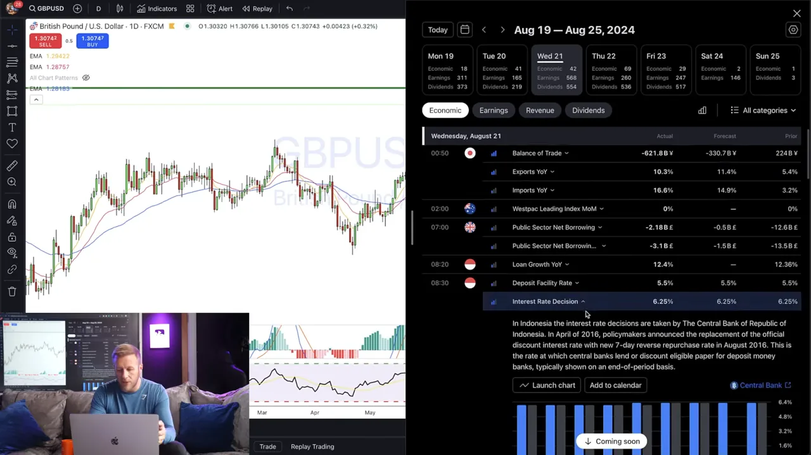
차트 설정에서 이벤트 표시를 켜 두면 이 일정이 차트 아래에 작은 국기 아이콘으로 찍혀요. 아이콘을 누르면 지표 이름과 예상값이 떠요. 발표자는 그날 저녁 예정된 FOMC(Federal Open Market Committee)를 중요한 일정으로 짚어요. 캘린더는 경제 지표 말고도 실적, 매출, 배당 일정을 탭으로 나눠 보여 줘서 주식 투자에도 쓸 수 있어요.
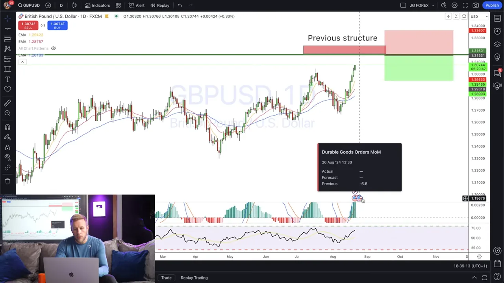
주식 스크리너
스크리너는 조건으로 종목을 걸러 주는 도구예요. 발표자가 투자용으로도 TradingView를 쓰는 이유가 이거래요. 시가총액, 배당수익률, EPS(Earnings Per Share), 순이익률 같은 열을 원하는 대로 넣고 빼고, 위쪽 필터로 거를 수 있어요. Performance, Extended Hours, Valuation 탭을 바꾸면 보는 열이 바뀌어요.
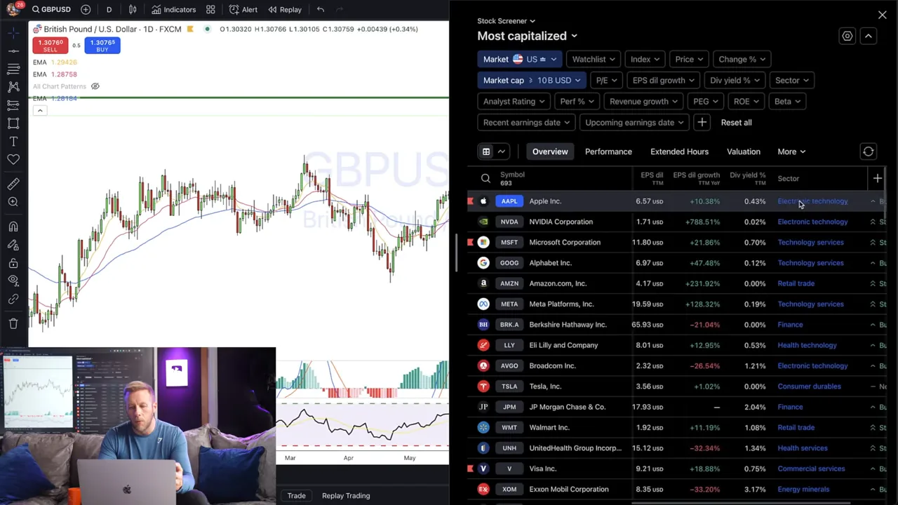
스크리너는 화면 아래 패널에서도 열 수 있어요. 위에는 Apple 차트, 아래에는 Apple의 재무 숫자를 함께 두는 식이에요. 발표자는 정량·정성 분석으로 종목을 고르고, 들어갈 시점은 차트로 잡는 걸 한 화면에서 할 수 있다는 점을 좋게 봐요.
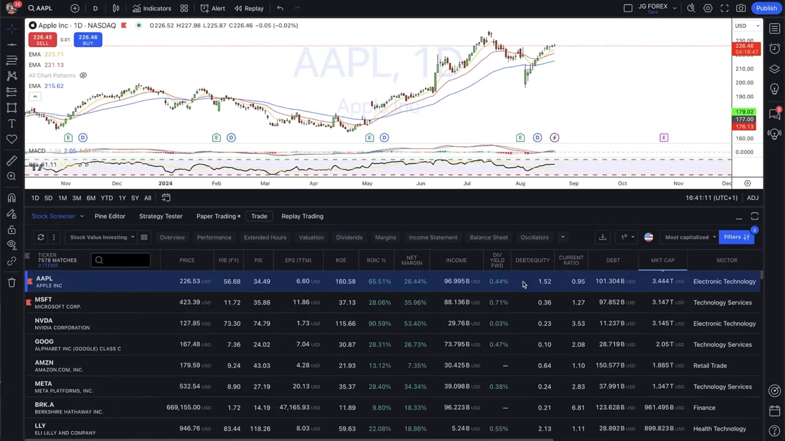
모의투자 대회 The Leap
홈 화면 Community 메뉴에는 TradingView의 모의투자 대회 The Leap이 있어요. 화면에는 총상금 45,000달러가 걸려 있다고 나와요. 발표자는 실력을 키우는 건전한 경쟁이나 재미로는 괜찮지만, 상금을 노리고 하지는 말라고 해요. 이런 대회는 정해진 기간에 남보다 많이 벌어야 이기는데, 그건 매매의 본질이 아니라는 거예요. 이런 대회에 빠지면 오히려 돈을 잃을 수 있다고 경고해요.
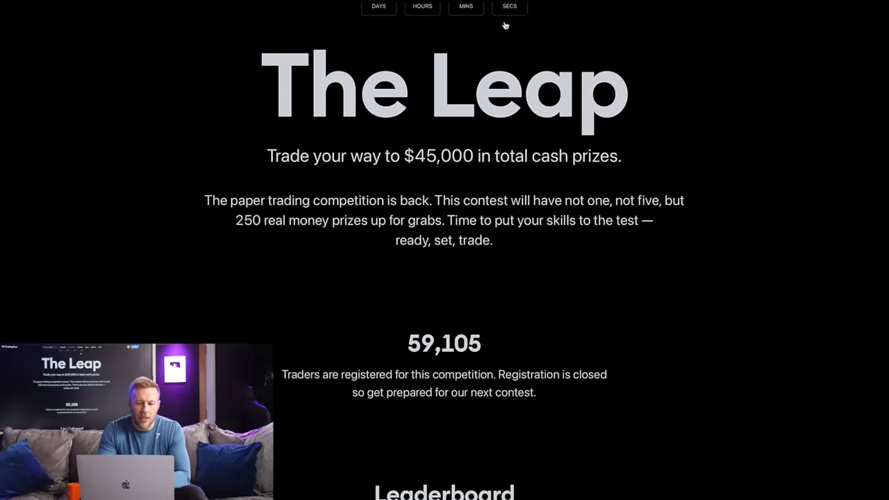
모바일·데스크톱 앱
TradingView는 모바일 앱과 데스크톱 앱도 있어요. 발표자는 모바일 앱으로 매매하는 건 권하지 않아요. 데스크톱 앱은 Mac, PC(Personal Computer), Linux용이 있고, 브라우저가 아니라 설치한 프로그램으로 돌아가요. 가장 큰 장점은 모니터 여러 대에 차트를 나눠 띄우고 서로 동기화할 수 있다는 점이에요. 그래도 처음에는 웹으로 충분히 익숙해진 다음 넘어가라고 해요.
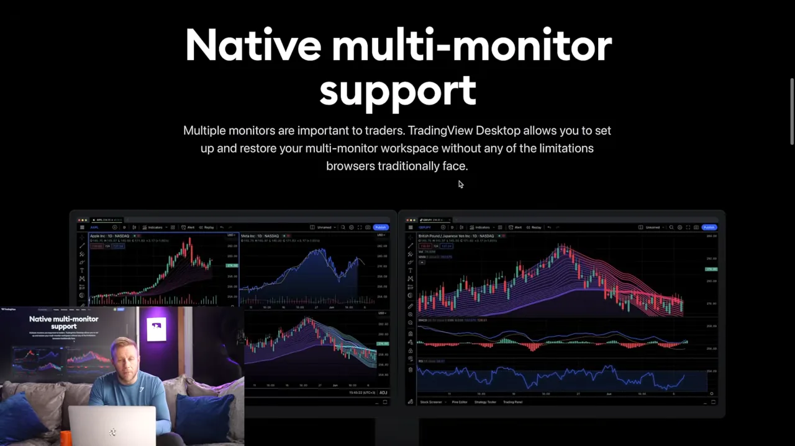